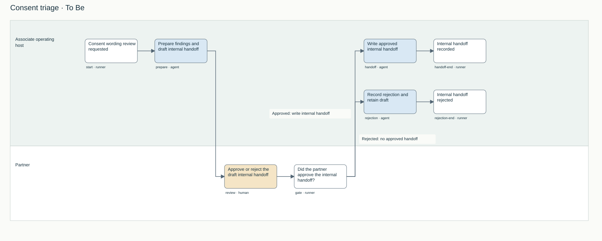

18 November 2026 / Codex CLI 0.153.4 / Recorded evidence viewer
Installing the skill does not install the workbench CLI.
A fresh Codex invocation discovered and read the installed legal-eng-workbench skill. Both executable checks failed before the Python package was installed.
OBSERVED SETUP GAPpython -m workbench --help
Exit code: 1
C:\Python314\python.exe: No module named workbench
legal-workbench --help
Exit code: 1
legal-workbench : The term 'legal-workbench' is not recognized as the name of a cmdlet, function, script file, or
Recovery tested
Create a project virtual environment.
Install legal-eng-workbench 0.1.0 into that environment.
Use its exact Python interpreter for the invocation.
The subsequent help command succeeded. Skill discovery, CLI readiness, generated-package installation and model execution are separate checks.
Observed model authoring / Synthetic legal scenario
A fresh host authored and released a new workflow.
The installed authoring skill produced consent-triage 0.1.0: eight nodes, two reusable methods, explicit partner approval and rejection. This was a new model, not a replay of the bundled DD example.
Real authoring recovery
Function packages cannot combine different system owners
The host aligned ownership fields and rebuilt successfully. The release-refusal test also needed its expected exit code corrected from 1 to 2.
Generated methods
prepare-consent-findings
record-consent-disposition
Method instructions require actual source reads and citations. Rehearsal answers remained explicitly scripted fixtures.
| Rehearsal case | Native outcome | Business success | Expected result |
|---|
| approval | completed | True | Pass |
| rejection | completed | False | Pass |
| missing-annex | completed | False | Pass |
| missing-capability | start-refused | None | Pass |
Rejected package review blocked release. Simulated approval allowed a rehearsal release. Same-session installation checks passed; fresh-session discovery is assessed separately.
Generated artifact / Native compiler output
The generated process keeps the partner decision explicit.
Actual To-Be SVG produced from the host-authored consent-triage model. The host prepares findings; the partner decision selects handoff or rejection.

Fresh-session attempt / Failed before model work
Same-session installation did not prove fresh-host usability.
The authoring session validated its installed files, but a new Codex process could not scan that skill folder. Its model turn also failed on an account usage limit.
Observed discovery error
failed to scan skill path: .../.agents/skills/consent-triage
Access is denied. (os error 5)
Observed turn failure
You've hit your usage limit.
Event: turn.failed — no source-document analysis completed.
Bounded recovery
A normal-process re-release and fresh installation of the same candidate were readable and passed native validation: 8 nodes, 2 methods, no modelling warnings. No ACLs or account settings were changed.
A fresh sandboxed model invocation remains unverified. Temporary staging permissions are the suspected cause of the cross-process access problem; a cross-account regression is still needed.